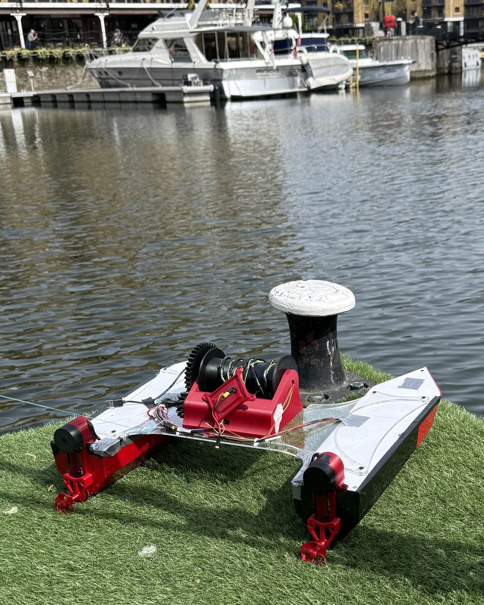
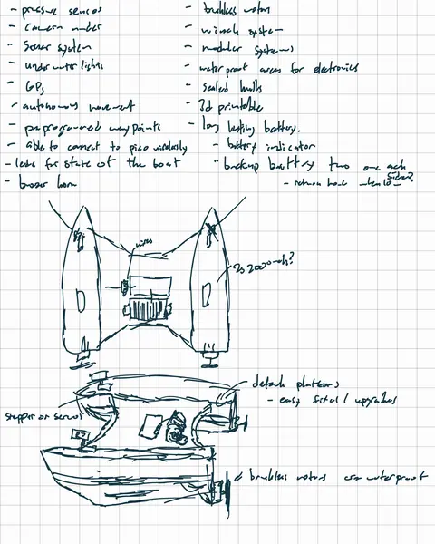
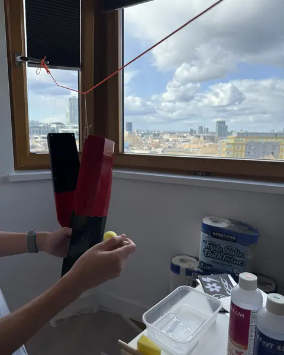
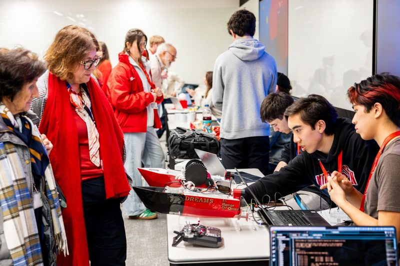
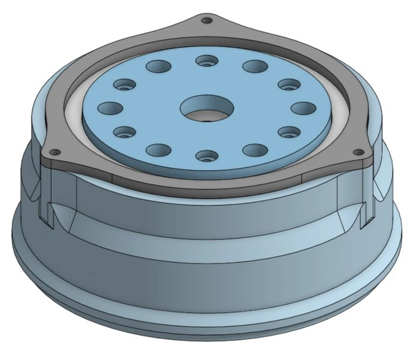
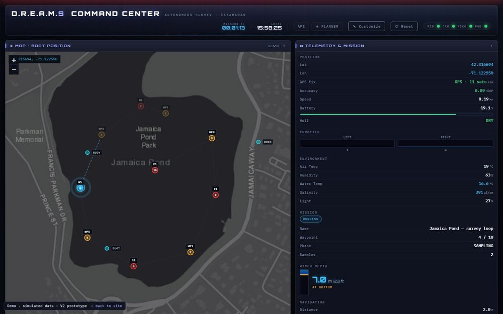

V1 · Spring 2026Designed
D.R.E.A.M.S is a modular autonomous survey boat, designed and built from scratch by two Northeastern engineering students to map water quality in small bodies of water.



What D.R.E.A.M.S stands for
Data Recovery for Environmental And Marine Surveillance
We built the first D.R.E.A.M.S in London during our first year at Northeastern: a 3D-printed catamaran that navigated to GPS waypoints on its own at St Katharine Docks. Since then we've redesigned it twice. Now we're building a modular platform that labs, watershed groups and ports can send out to see what's in their water.
Every part was sketched, modeled, printed, wired and tested by us, including the parts that didn't work.
Open the full build log →


V3 splits the boat into a Raspberry Pi 5 mission computer and a Teensy 4.1 real-time controller on one custom carrier board. Sensors and payloads are modular, so each build can be configured for the job.
Explore the boat →
Our first boat was built in one semester in London. In its water test it navigated to GPS waypoints on its own and held a radio link of about 1 km to shore.

Each version fixes what the last one taught us. The long-term goal goes beyond measuring water to collecting it.
Full roadmap →Autonomous waypoint navigation, a 1 km radio link and bottom sampling, on a 3D-printed hull.
CompleteA Pi 5 brain, stereo vision, a 4G cloud link and our first PCB. Never fully built; bench tests exposed the flaws that drove V3.
PrototypeV3 will drive itself around small bodies of water, sample at the surface with the pod and measure depth with a fish-finder sonar.
In buildA robotic arm on deck that works with the winch to collect water samples and sediment from the bottom.

In our conversations with the Port of Oakland and the Charles River Watershed Association, we learned that their teams still collect sediment samples by sending divers down. An arm on an autonomous boat could do that job without anyone going in the water.
Two pieces of our software run right in your browser.
Place waypoints on satellite imagery and see the route's distance, estimated time and data volume.
Open the planner ↗
The dashboard that ran on V2's Pi 5, with a simulated boat surveying a pond: live telemetry, the mission map and the controls.
Open the demo ↗We've built the boat ourselves so far. To finish V3 we're looking for funding, a mentor in the field, and places to machine and fabricate what we design.
Every dollar goes into hardware on the boat and getting V3 onto the water.
An engineer or scientist in marine robotics or water quality to review our designs and field plans.
PCB fabrication and assembly, and CNC machining for metal parts.
Ponds and small lakes for field trials, with the survey data shared back.
We design, build and test the hardware ourselves. The software is written with Claude Code.
Meet the team →